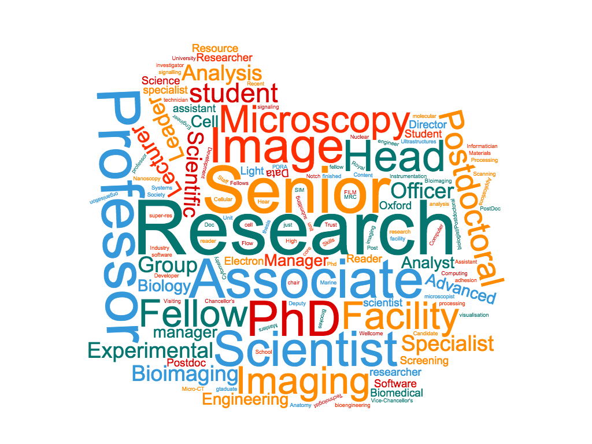
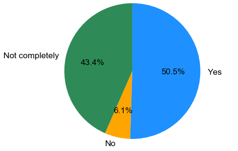
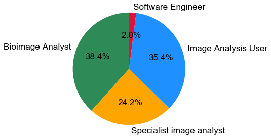
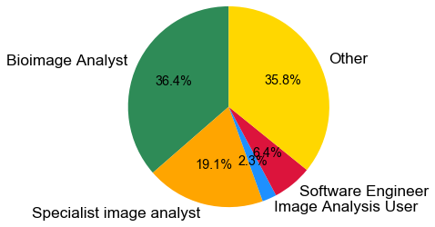
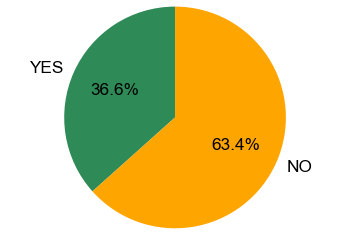

Results of NEUBIAS Questionnaire (UK): do you use or develop bioimage analysis for life sciences research?
Posted on September 22, 2016 at 9:52 AM
NEUBIAS (Network of European BioImage Analysts) is a new initiative designed to link and develop BioImage Analyst training and careers, and to improve and further extend image analysis techniques within the life sciences:
http://www.cost.eu/COST_Actions/ca/CA15124
http://www.eubias.org/NEUBIAS/
We recently wrote to UK life science academics and asked those involved in some form of image analysis to fill out a short questionnaire. The results of this questionnaire were enlightening and have given us an incite into the state of image analysis careers within the life sciences.
Very few individuals will question the importance of image analysis as an essential tool in the toolkit of scientists as they pursue their research. A recent survey of 1905 life science researchers [1] stated that 78.7% of imaging scientists thought that quantitative image analysis was 'Essential' or 'Very important' to their imaging work and also 59.3% thought the most difficult part of their day-to-day research was image analysis. The following questionnaire highlights that although their are many scientists whom perform image analysis within the life sciences they lack the recognition and support they deserve or need to pursue careers in this valuable discipline.
The first question asked: What is your current job/position title?

Out of the 99 people that answered the questionnaire only two or three people gave the same answer to above question and very few people gave the answer 'Image Analyst' and no-one gave the answer 'Bioimage Analyst'. The above 'Word Count Image' gives a feeling for the distribution of responses that were received. The distribution was very broad, this is not necessarily negative, it shows the diversity of science, but it does suggest that most of the image analysis being performed in the life sciences is through individuals for whom this is not their primary goal of their role and also that their is little cohesion in the nomenclature for individuals in this discipline. Going by their job title it suggests it is their part-time pursuit not their main focus.
Do you feel that your current job/position title accurately describes the work that you do?

50.5% of individuals said 'YES' to the above question whereas around 43.4% said 'Not completely' and 6.1% said 'No', not at all. This suggests that there is a large component of individuals for whom their job title and description doesn't quite describe the focus of their work. This doesn't prove that they should be named 'Image Analyst' or similar but it does suggest individuals are assuming or taking on roles which are not reflected by their job-title. As we see later, there is evidence to suggest these individuals are mostly performing image analysis.
Which of the following categories best describes your working relationship with image analysis?

The responses to this question was very interesting. 35.4% saw themselves as 'Image Analysis Users'. These are individuals who treat image analysis as a tool that they use in their research. Although potentially skilled, they do not create or develop analysis methods, algorithms or pipelines. Many of these researchers are probably laboratory bioscientists interested in using these tools just as a means of testing their biological hypothesis. The remaining 64.6% of individuals put themselves in a more specialist role, mostly either as a Bioimage Analyst, Specialist Image Analyst but a few used the term Software Engineers. This essentially means that 64.6 % of the individuals who filled out this questionnaire have a professional level of image analysis expertise and are employed in the life sciences. Along with the first two questions, it suggests that these individuals in their roles are not defined according to the actual job they are performing, but have found themselves in these roles as means to do what they want, or what is needed (i.e. image analysis). It is excellent that these individuals perform these tasks whilst being embedded in the life sciences, but it apparent they are missed labelled and likely not well supported in these technical roles.
Often we perform different roles at different times. how much of your time, on average, do you commit to the following activities?

For this question subjects were asked how they distribute there day-to-day research. between the activities of a BioImage Analyst, Software Engineer, Image Analysis User and other research activities. We weighted peoples answers depending of whether they stated that they spent all of their time (8), most of their time (6), half of their time (4), just some (1) or none of their time (0) performing the specified activities. Largely speaking most individuals spent most of their time performing some kind of image analysis, the majority of these individuals compacted all other activities into a smaller proportion of their time. This is very interesting as it shows that most of the individuals who filled out this questionnaire are indeed Image Analysts and that other forms of research and experimentation are secondary to their data analysis.
If you are interested in pursuing image analysis as potential career, do you feel as though there are sufficient options for career progression in your chosen field of academia?

The distribution of answers to this question is very clear. Of those individuals interested in pursuing image analysis 63.4% of them said that they did not have sufficient career options to develop in this direction. This essentially means that although these individuals are fulfilling a heavily in demand area of bioscience research, the scientific system which employs them is not acknowledging this in a way that means these individuals can develop their talents in this direction. The previous questions prove that many individuals are performing image analysis as the dominant aspect of their day-to-day research, even if it isn't their obvious job description. Clearly more support is needed for these individuals to help them progress in their careers.
Summary
The data from this questionnaire shows that although image analysis is being performed from positions embedded in the life sciences it is not receiving the recognition and support it deserves. It is important to elevate individuals who not only have a sound biological expertise but who pursue the best levels of competence in numerical disciplines.
Bioimage Analysts, many of whom originate from within the biological sciences, deserve to have a career structure that supports and encourages their discipline. Many talented life scientists see that there is a real need for image analysis skills in their work and develop these skills to fill this void. Soon after, they realise that to progress within their institute or research area they have to prioritise publications and biological findings over good practise and support of others, dissuading them from pursuing this direction too strongly. The life scientists that follow their passion, and who take up analyst positions, will quickly find that their academic career has plateaued. Many scientists that develop analysis skills also realise that industry and commerce relish their skills and will employ and support them, further reinforcing the potential for numerical brain-drain in the biological sciences. To stop this from happening, we need to offer image analysts and those on similar career paths benefits that encourage these individuals to remain in biology and achieve the highest levels of academic recognition. Furthermore we need to provide education and support to individuals to whom numerical science is a black-box so they can develop an appreciation and undestanding of this area. Many scientists who show skill in image analysis feel as though they are governed by a system that doesn't see or support their potential and they are side-lined as a result. It is the hope of this survey and broadly speaking of NEUBIAS that we create awareness for and address this issue.
http://www.cost.eu/COST_Actions/ca/CA15124
http://www.eubias.org/NEUBIAS/
UK members of the NEUBIAS Management Committee
[1] A Pilot Survey on Bioimage Analysis Needs 2015: Results Summary (Kota Miura)